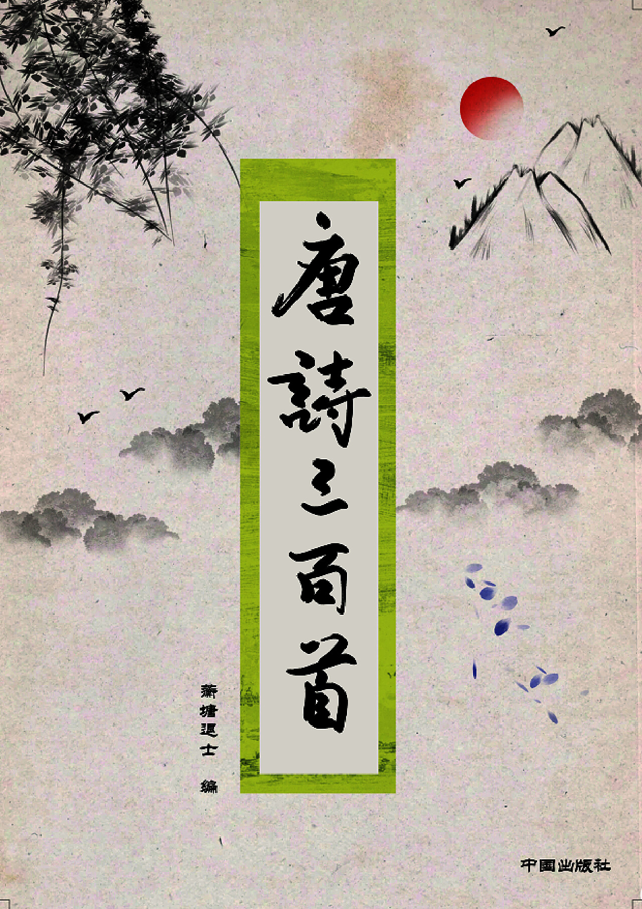
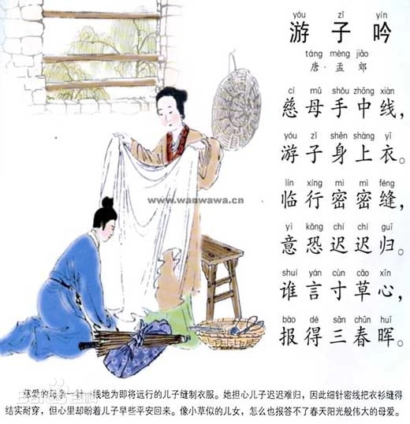
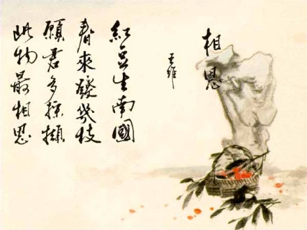
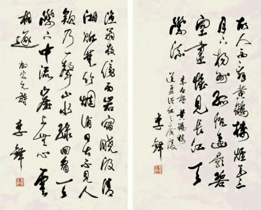

唐诗
唐朝诗歌统称
行事风格
唐诗的形式是多种多样的。唐代的古体诗，主要有五言和七言两种。近体诗也有两种，一种叫做绝句，一种叫做律诗。绝句和律诗又各有五言和七言之不同。所以唐诗的基本形式基本上有这样六种：五言古体诗，七言古体诗，五言绝句，七言绝句，五言律诗，七言律诗。古体诗对音韵格律的要求比较宽：一首之中，句数可多可少，篇章可长可短，韵脚可以转换。近体诗对音韵格律的要求比较严：一首诗的句数有限定，即绝句四句，律诗八句，每句诗中用字的平仄声，有一定的规律，韵脚不能转换；律诗还要求中间四句成为对仗。古体诗的风格是前代流传下来的，所以又叫古风。近体诗有严整的格律，所以有人又称它为格律诗。
唐诗的形式和风格是丰富多彩、推陈出新的。它不仅继承了汉魏民歌、乐府传统，并且大大发展了歌行体的样式；不仅继承了前代的五、七言古诗，并且发展为叙事言情的长篇巨制；不仅扩展了五言、七言形式的运用，还创造了风格特别优美整齐的近体诗。近体诗是当时的新体诗，它的创造和成熟，是唐代诗歌发展史上的一件大事。它把中国古曲诗歌的音节和谐、文字精炼的艺术特色，推到前所未有的高度，为古代抒情诗找到一个最典型的形式，还特别为人民所喜闻乐见。但是近体诗中的律诗，由于它有严格的格律的限制，容易使诗的内容受到束缚，不能自由创造和发挥，这是它的长处带来的一个很大的缺陷。
分期

初唐时期
这一时期的代表作家是“初唐四杰”——王勃、杨炯、卢照邻、骆宾王；此外，还有陈子昂也是初唐有名的诗人，他是第一个举起诗歌革命大旗的作家。在文风上，初唐时期的诗人作品中气象万千，雄浑博大，已经从南北朝争相纤构狭小的宫体诗中逐渐走了出来，开辟了新的世界。
盛唐时期
经济繁荣，国力强盛，唐诗发展至顶峰时期，题材广阔，流派众多，出现“边塞诗派”与“田园诗派”等。伟大的浪漫主义诗人李白和伟大的现实主义诗人杜甫，即是这一时期最杰出的代表
中唐时期
在中唐时期，分为前期与后期，前期处于低潮，后期则重现繁荣景象。前期代表诗人刘长卿、韦应物（山水诗，王孟余绪）、卢纶、李益（边塞诗，高适、岑参余绪）后期则出现“新乐府诗派”、“韩孟诗派”。白居易、元稹领导了新乐府运动。白居易，他提出“文章合为时而著，歌诗合为事而作”的进步理论主张，白居易的诗明白晓畅，通俗易懂，深受群众喜爱，代表作有《长恨歌》《琵琶行》等；此外，刘禹锡，李贺之诗也颇有成就。
晚唐时期
晚唐时期为夕阳返照时期晚唐诗人较著名的有：温庭筠、李商隐、杜牧、韦庄等。其中，李商隐和杜牧被人们称为“小李杜”。

派别

山水田园诗派
代表人物：王维、孟浩然
特点：题材多青山白云、幽人隐士；风格多恬静雅淡，富于阴柔之美；形式多五言古诗 、五绝、五律。
代表作：王维：《山居秋暝》《西施咏》《九月九日忆山东兄弟》等孟浩然：《过故人庄》等

边塞诗派
代表人物：高适、岑参、王昌龄、李益、王之涣、李颀。
特点： 描写战争与战场，表现保家卫国的英勇精神，或描写雄浑壮美的边塞风光，奇异的风土人情，又或描写战争的残酷，军中的黑暗，征戍的艰辛，表达民族和睦的向往与情怀。
代表作：高适：《燕歌行》《别董大》《蓟门行五首》《塞上》《塞下曲》岑参：《白雪歌送武判官归京》王昌龄：《出塞》
.jpg)
浪漫诗派
代表人物：李白。
特点： 以抒发个人情怀为中心，咏唱对自由人生个人价值的渴望与追求。诗词自由、奔放、顺畅、想象丰富、气势宏大。语言主张自然，反对雕琢。
代表作：李白：《月下独酌》《梦游天姥吟留别》《蜀道难》等。
诗人称号及介绍
| 称号 |
诗人 |
特点及由来 |
| 诗骨 |
陈子昂 |
其诗词意激昂，风格高峻，大有“汉魏风骨”，因而被誉为“诗骨”。 |
| 诗杰 |
王勃 |
其诗流利婉畅，宏放浑厚，独具一格，人称“诗杰”。 |
| 诗狂 |
贺知章 |
秉性放达，自号“四明狂客”，因其诗豪放旷达，人称“诗狂”。 |
| 诗家天子（另一种说法--诗家夫子）七绝圣手 |
王昌龄 |
其七绝写的“深情幽怨，音旨微茫”，因而举为“诗家天子”。 |
| 诗仙 |
李白 |
诗想象丰富奇特，风格雄浑奔放，色彩绚丽，语言清新自然，被誉为“诗仙”。 |
| 诗圣 |
杜甫 |
其诗紧密结合时事，思想深厚，境界广阔，人称为“诗圣”。 |
| 诗囚 |
孟郊 |
作诗苦心孤诣，惨淡经营，元好问曾称之为“诗囚”。 |
| 诗奴 |
贾岛 |
一生以作诗为命，好刻意苦吟，人称其为“诗奴”。 |
| 诗豪 |
刘禹锡 |
其诗沉稳凝重，格调自然格律粗切，白居易赠他“诗豪”的美誉。 |
| 诗佛 |
王维 |
王维不少诗歌中有浓厚佛教禅宗意味，以禅入诗。 |
| 诗魔 |
白居易 |
其作诗非常刻苦，“酒狂又引诗魔发，日午悲吟到日西”，人称“诗魔”。 |
| 五言长城 |
刘长卿 |
擅长五言诗，他的五言诗作是全部诗作的十分之七八，自称“五言长城”。 |
| 诗鬼 |
李贺 |
其诗善于熔铸词采，驰骋想象，运用神话传说创造出璀璨多彩的形象，故称其为“诗鬼”。 |
| 诗雄 |
岑参 |
其诗雄浑豪迈，充满豪迈的英雄气概，在边塞诗等作品中尽显雄浑风格。 |
| 七律圣手 |
李商隐 |
在七言律诗的创作上成就极高，格律严谨，结构精巧，情感细腻复杂，常通过用典传达情感。 |